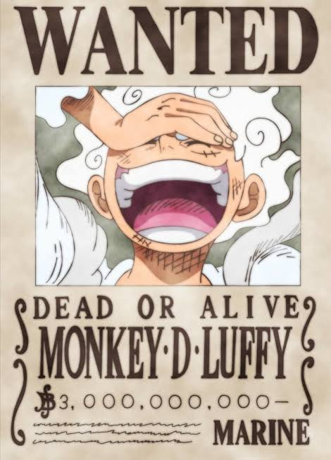
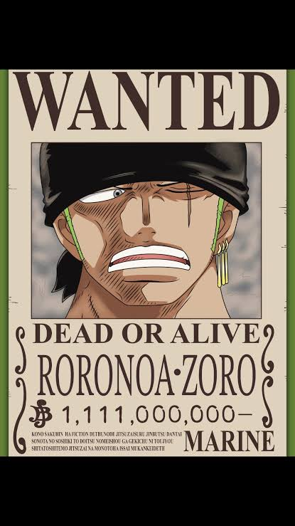
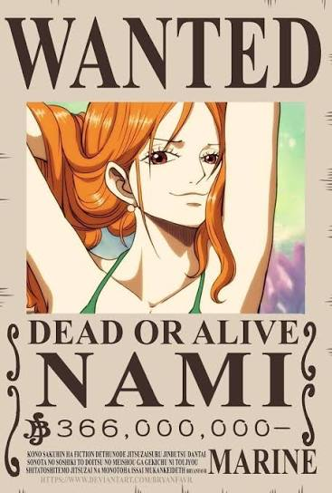
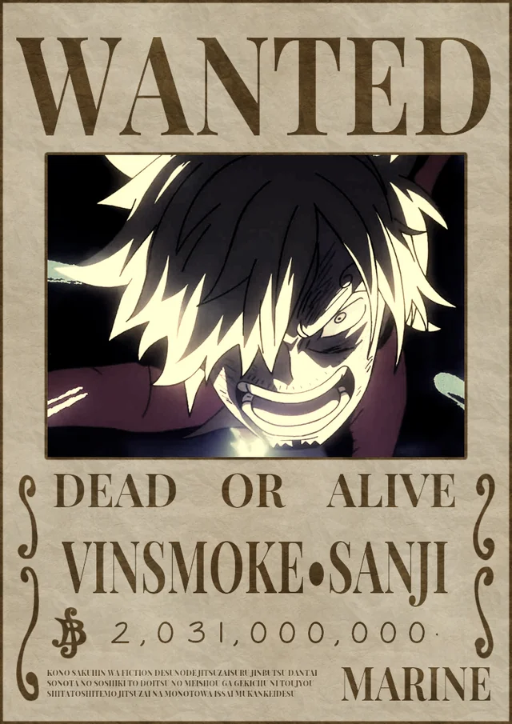
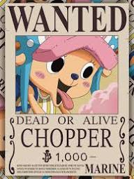
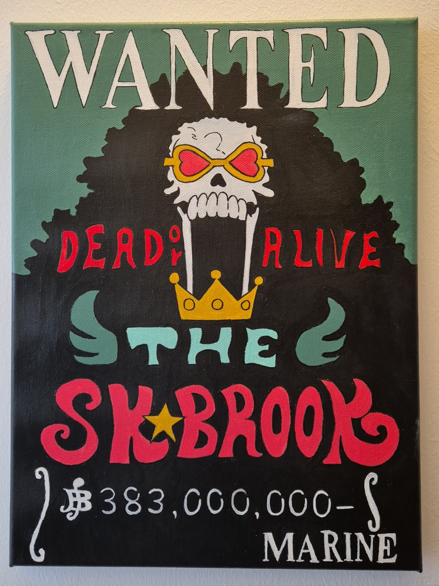

Una página creada por Sandra Herrera
Holiii, soy Sandra Herrera de 2do D y mi anime favorito es one piece y me gustaria q conociera sobre el un poco
⚓ Conocer One PieceOne Piece es un anime y manga creado por Eiichiro Oda. La historia sigue las aventuras de Monkey D. Luffy y su tripulación de piratas mientras recorren diferentes lugares del mundo en busca del legendario tesoro llamado One Piece.
Durante su viaje conocen muchos amigos y también enfrentan diferentes enemigos. La serie destaca temas como la amistad, los sueños, la libertad, el esfuerzo y la importancia de ayudar a los demás.
Luffy comienza su aventura con el objetivo de convertirse en el Rey de los Piratas. Para conseguirlo, reúne a un grupo de compañeros que comparten diferentes sueños y habilidades. Juntos recorren los mares y viven muchas aventuras.

Es el protagonista de One Piece y capitán de los Piratas del Sombrero de Paja. Su sueño es convertirse en el Rey de los Piratas.

Es uno de los principales miembros de la tripulación. Es un espadachín que sueña con convertirse en el mejor espadachín del mundo.

Es la navegante de los Piratas del Sombrero de Paja. Tiene grandes conocimientos sobre navegación y mapas.

Es el cocinero de la tripulación. También es un gran luchador y utiliza principalmente sus piernas para combatir.

Es el médico de la tripulación. Es un reno que obtuvo habilidades especiales después de comer una Fruta del Diablo.

Es el músico de la tripulación. Es un esqueleto que también es un espadachín y tiene una personalidad muy divertida.
Las Frutas del Diablo son frutas especiales que existen en el mundo de One Piece. Las personas que comen una de estas frutas obtienen diferentes habilidades y poderes especiales.
Sin embargo, las personas que comen una Fruta del Diablo pierden la capacidad de nadar. Existen diferentes tipos de frutas y cada una puede otorgar habilidades diferentes.
Son frutas que proporcionan habilidades muy variadas. Pueden modificar el cuerpo, afectar objetos o producir diferentes efectos.
Permiten al usuario transformarse en un animal o en una forma combinada entre humano y animal.
Permiten controlar y transformarse en determinados elementos o fenómenos de la naturaleza.
El mundo de One Piece está formado por numerosos mares, islas y lugares diferentes. Durante sus aventuras, Luffy y su tripulación conocen culturas, personajes y situaciones completamente distintas.
Uno de los lugares más importantes es el Grand Line, una zona del océano donde ocurren muchas de las aventuras de la historia. Los viajes por este lugar están llenos de desafíos y misterios.
Los personajes también visitan islas con diferentes paisajes, climas y habitantes. Cada lugar aporta nuevos acontecimientos a la historia y permite conocer más sobre el mundo.
Su sueño es convertirse en el Rey de los Piratas y encontrar el legendario One Piece.
Quiere convertirse en el mejor espadachín del mundo.
Su objetivo es crear un mapa completo del mundo.
Sueña con encontrar el All Blue, un lugar legendario relacionado con su pasión por la cocina.
Quiere convertirse en un médico capaz de ayudar a las personas y tratar diferentes enfermedades.
Sueña con regresar junto a Laboon después de completar su viaje.
En el mundo de One Piece, algunos piratas tienen recompensas colocadas por el Gobierno Mundial. Estas recompensas representan la importancia o el nivel de amenaza que las autoridades atribuyen a determinados piratas.
Los carteles de recompensa son conocidos como "Wanted" y muestran información sobre la persona buscada. Estos carteles se han convertido en uno de los elementos más conocidos de One Piece.
Me gusta One Piece porque tiene personajes interesantes, aventuras emocionantes y momentos divertidos. También me gusta porque muestra la importancia de la amistad, de luchar por nuestros sueños y de nunca rendirse ante las dificultades.
Para mí, una de las mejores cosas de One Piece es que cada personaje tiene una personalidad diferente y una historia propia. Esto hace que la serie sea entretenida y que los personajes sean fáciles de recordar.
También me gusta la forma en que los personajes trabajan juntos y se apoyan durante sus aventuras. Por eso considero que One Piece es un anime muy interesante para conocer y disfrutar.